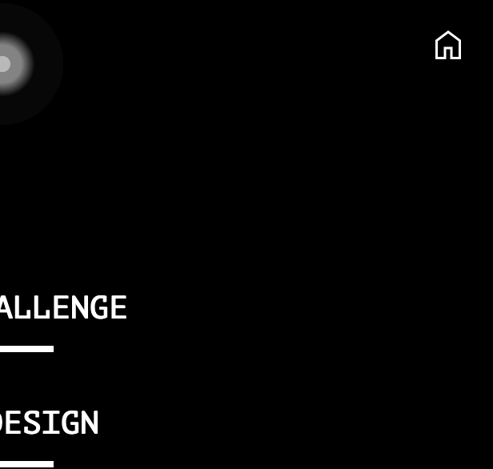
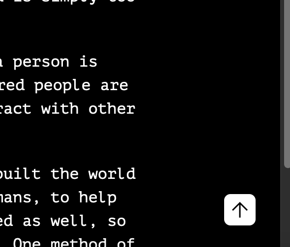

the website
Identifying key features and notable details of the website.

Structure
Site structure
Every website needs a structure; without one, it would be a jumbled mess and a navigation nightmare. Since this website is very small, having only a few pages, I've settled with a home page and the rest as article pages.
Here is how it is organized from the developer's (my) view. "index.html" is the homepage (the website will automatically load this file in when loaded, and "index.html" will not show up in the URL), whilst the rest of the pages are named accordingly.
Due to the small size of the website, I want to be able to access every page from any page. For this, I need to use a navigation menu.
Navigation menu
This is the navigation menu, accessible from every page. The user can hop to anywhere in this small website with ease.
The user can go back to the home page by clicking the home button, which only appears in the top-right corner of the navigation menu when the current page isn't the home page (it would be pointless).
Page structure
Home page
As the website is very simple and small, I decided to make the home page simple, placing the title and purpose of the website in the center.
The navigation menu can be accessed by clicking the pulsating button at the top; I will talk more about this later.
Content page
As all of my content pages are articles, I've decided to adopt an article format for them.
Each header has a title and a subtitle, as well as a header image, or "hero banner", underneath.
Apart from the content itself, I've also added a "scroll to top" button that appears when the user has scrolled a certain amount.
Article
Even the article itself needs structuring. As I want to add images to my website, I've made it easy for me to put them either to the left or right of a block or text, or just by itself. For demonstration, I will be using pictures of dogs from the internet.
Dachshund placed on the right.
Photo by Tony Alter, on Flickr
Photo on Wikimedia Commons
Samoyed just by itself.
I also need to credit the images that I have taken from the web. I have done so discreetly by adding the credits on the bottom right corner.
Features
Hacker text effect
I wanted to make the home page a little less boring than plain text. After a bit of searching on YouTube, I've decided to add a hacker text effect to the titles. It will automatically play once when loaded, and will play again when hovered or clicked.
Ò
Try it on me!
You can find the source code on . Comments have been added to explain the code throughly.